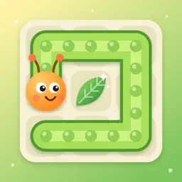
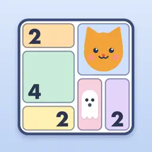

ブラウザで遊べる今日の問題
iPhoneアプリと同じ「毎日の1問」を、ブラウザでそのまま遊べます。無料・登録なし。日本時間の0時に新しい問題になります。

今日のいもむしいもむしをなぞって、葉っぱを1回ずつぜんぶ食べる一筆書きあそぶ
今日のすうじのへや数字のへや割り と 住人さがし。毎日2問の数字パズルあそぶ 今日のおべんとう決まった順に出るおかずを、お弁当箱にすきまなく詰めるあそぶ
今日のおべんとう決まった順に出るおかずを、お弁当箱にすきまなく詰めるあそぶ 今日のドライブすれ違う車のナンバー4桁で、10が作れるかを答えながら目的地へあそぶ
今日のドライブすれ違う車のナンバー4桁で、10が作れるかを答えながら目的地へあそぶ- 今日のステージ＋−×÷のゲートの得なほうをくぐって、数をふやしながらどこまで走れるかあそぶ
- 今日のたまごゆでたまごの殻だけを、白身を削らずにツルッとむく3Dあそぶ
今日のまとめ
遊んだ今日の1問が、ここにまとまります（この端末の中だけ）。
今週のチャレンジ
今週の1本を、月〜日の7日つづけて遊ぶスタンプカードです（この端末の中だけ）。
CPU と対戦
このページについて
どの問題も、アプリの中で毎日出している「今日の問題」と同じものです（日付から作るので、だれが開いても同じ盤・同じナンバー・同じコース・同じたまご）。ブラウザ版はその日の1問だけで、ランキングや過去の問題はありません。下剋上デュエルは CPU との1試合だけで、オンライン対戦はアプリで。記録はこの端末の中にだけ残り、どこにも送りません。
ステージあそびやランキングは iPhone アプリで。アプリのいちらん ›